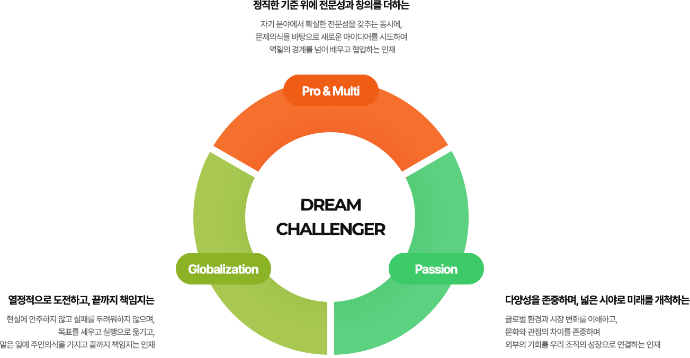

인재채용
조직과 함께 성장할 인재를 공정한 기준으로 채용합니다.
대창이 함께하고픈
인재상을 소개합니다.

대창은 다양한 제도를 통해
임직원이 함께 성장하고 있습니다.
조직과 함께 성장할 인재를 공정한 기준으로 채용합니다.
개인의 잠재력을 극대화 하여 성장으로 연결합니다.
목표를 설정하고 달성하고, 구성원의 성과와 기여를 공정하게 평가합니다.
역할과 능력에 맞는 교육을 통해 전문인력, 리더로의 성장을 지원합니다.
공정하게 진행된 평가를 통해 구성원의 노력과 성과에 합리적으로 보상합니다.
대창은 다양한 복리후생 제도로
임직원의 근무환경을 개선하고 있습니다.
건강검진, 주택구입대출, 단체 상해보험 가입, 복지포인트 지급, 자녀 학자금 지원, 경조금 지원
장기근속포상, 모범상 포상, 공로상 포상, 퇴직기념품, 자격수당, 직책수당
명절 선물/차례비, 창립기념일 행사/선물, 생일선물
구내식당 (아침, 점심, 저녁, 야식) 무료, 사우회 운영(경조금, 경조용품, 대출, 배당금)
콘도/리조트 회원권 이용, 동호회/동호회 지원금, 사내 휴게실, 샤워실, 회의실, 안마의자
출퇴근 통근버스 운영, 사원아파트 임대, 기숙사 운영
하계휴가, 창립기념일 휴무, 경조휴가
대창의 업무 프로세스는
8가지의 직무로 나뉘어집니다.
구매 부문은 회사의 중·장기 생산 전략을 뒷받침하는 핵심 조직으로, 국내 및 해외 원자재와 부자재(MRO)를 포함한 자원 조달 전반을 담당합니다.
시장 환경과 가격 변동을 고려하여 경쟁력 있는 가격으로 안정적인 조달을하며, 체계적인 자재 운영과 품질 관리를 통해 안정적인 생산 기반을 유지합니다.
또한 협력사와의 지속적인 협업을 통해 공급망 안정성을 확보하고, 원가 경쟁력 강화를 통해 회사의 수익성 제고에 기여합니다.
내부회계관리 직무는 재무보고의 정확성·신뢰성·적시성을 확보하여 이해관계자에게 투명한 경영정보를 제공하기 위해 관련 법령 및 감독당국의 내부통제 가이드라인을 준수하여 상장기업으로서의 법적 리스크를 해소하고, 내부통제 체계의 고도화를 통해 회계 오류 및 부정 위험을 사전에 예방합니다. 또한, 경영진과 이사회가 합리적인 의사결정을 할 수 있도록 내부통제 기반을 구축하고, 대외 신뢰도 제고 및 기업가치 향상에 기여하는 업무를 수행합니다. 조직의 투명성과 책임성을 높이고, 사고 예방과 경영 효율성 향상을 위해 내부 업무감사를 수행합니다.
인사총무 직무는 회사의 지속 가능한 성장을 견인할 최적의 인재를 확보하고 육성하며, 공정하고 선진적인 인사 시스템을 통해 건강한 조직문화를 정착시키는 역할을 합니다. 또한, 구성원들이 업무에만 집중할 수 있도록 최상의 근무 환경과 인프라를 구축하고, 회사 운영 전반을 효율적으로 지원하는 비즈니스 파트너이자 핵심 조직입니다.
재무직무는 기업의 모든 경제적 활동을 수치로 기록하여 투명한 재무 정보를 제공하고, 기업 운영에 필요한 자금을 적기에 조달·운용함으로써 기업 가치를 극대화하는 경영의 핵심 컨트롤 타워이며, 기업의 지속 가능한 성장을 지원하는 직무입니다.
현재 (주)대창에서는 자체 ERP 시스템을 구축하여 운영하고 있습니다. 해당 시스템은 실시간으로 전사 업무를 관리 및 지원하는 핵심 인프라이며, 이에 따라 전산팀은 안정적이고 중단 없는 시스템 운영을 최우선 가치로 삼고 있습니다.
그룹기획실은 대창그룹이 직면한 시장의 변화를 기회로 만들며, 지속성장을 이끄는 그룹사의 컨트롤 타워 입니다. 적절하고 신속한 경영기획과 마스터 플랜 총괄 관리를 수행하여 최고경영진의 합리적인 의사결정을 지원하는 역할을 합니다.
대창의 생산기획 부서는 황동봉과 관련한 제품의 생산계획 수립부터 공정 운영, 실적 관리, 개선 활동까지 생산 전반을 관리하는 역할을 수행합니다. 생산 일정, 설비, 인력, 자재 등을 효율적으로 운영하여 생산성 향상과 동시에 납기 준수, 품질을 확보하고 공정 개선 및 원가 절감 업무를 수행합니다.
제품 및 원부자재, 작업공정의 표준화를 통하여 제품의 품질을 표준화하는 업무를 수행하고 있으며 공장 표준화 작업을 통하여 생산성 및 가동률을 향상시킴으로써 회사의 연간 생산목표 달성에 기여합니다.
대창의 채용은 6개의 과정을 거쳐 선별됩니다.
지원자의 경험과 역량, 지원 동기를 중심으로 작성된 입사지원서를 온라인을 통해 접수합니다.
제출해 주신 지원서를 바탕으로 직무 적합성과 기본 역량을 경험과 성과를 중심으로 종합적으로 평가, 검토 합니다.
실무진이 참여하는 면접으로, 직무 이해도와 실무 역량을 중심으로 확인합니다.
임원진이 참여하여 지원자의 성장 가능성과 조직 적합성을 종합적으로 검토합니다. 회사와 지원자 간의 방향성을 확인합니다..
입사 전 건강 검진을 통해 근무에 필요한 기본적인 건강 상태를 확인합니다.
최종 합격자에게 개별 안내드립니다. 입사 후에는 원활한 적응을 위한 채용 교육이 제공됩니다.